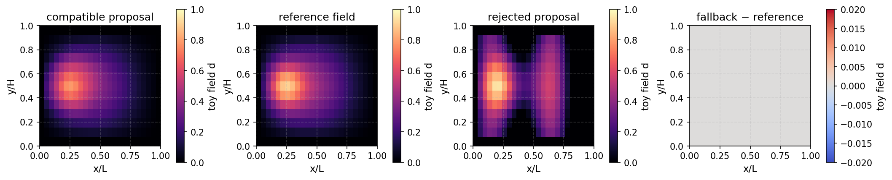

Assess a proposal and use a reference correction#
Learning objective. Evaluate a learned field against its discrete equation, select a residual tolerance, and compare accepted proposals with a direct reference correction.
Predict first. What happens to the selected field and the frequency of reference corrections when the residual tolerance is tightened?
Follow the worked calculation, then use the downloadable notebook to explore the exercises.
A learned field can be compared with the discrete equation that generated its training data. This creates a useful interface between prediction and numerical solution: propose a field, impose the field constraints, measure its residual, and select a reference correction when the required tolerance calls for one.
We reuse the MLP from the previous tutorial and the same course-owned ToyHelmholtzProblem. Its equation is \(A\mathbf{d}=\mathbf{b}(\lambda)\), with a dimensionless damage-like scalar \(d\) on a unit square. The residual therefore measures agreement with this linear field equation.
The proposal-to-solution sequence#
Check the inputs. Verify the feature order \([x/L,y/H,\lambda]\), tensor shape, finite values, and grid signature.
Predict and project. Evaluate the fixed MLP under
torch.no_grad(), restrict values to \([0,1]\), and use the previous field to impose a pointwise lower bound. Set boundary values to zero.Measure agreement with the equation. Evaluate the dimensionless relative residual
Select the result. Accept the projected proposal when \(\rho\le\tau\). Otherwise obtain the reference field using the direct linear solve
torch.linalg.solve. This correction computes a fresh solution of the discrete field equation.
The scalar \(\tau\) is the acceptance tolerance. The notebook uses a visible teaching threshold so that students can compare an accepted model field, a deliberately perturbed field, and the corrected result. The previous field comes from a smaller positive load, for which the linear model’s reference field also has smaller values.
Follow the calculation#
The opening calculation loads the saved checkpoint, or trains it when starting this notebook independently. The next cell obtains a proposal, evaluates its residual, and compares it with the reference. It then perturbs a field to illustrate the correction route. Subsequent cells demonstrate feature-order and finite-input checks, compare full spatial fields, and save the decision metadata.
{'environment': 'local', 'python': '3.10.18', 'course_revision': '077d43d87c55b4fdea720808fc24f040e957e1ea', 'versions': {'torch': '2.8.0', 'numpy': '2.2.6', 'scipy': '1.14.1', 'matplotlib': '3.10.8', 'nbformat': '5.10.4'}, 'setup_seconds': 0.025}
import json
from day2_helpers.course_tools import (
FEATURE_ORDER, ToyDamageAdapter, ToyHelmholtzProblem,
load_toy_model, make_toy_checkpoint,
)
checkpoint_path = assets_dir() / "models" / "tiny_damage_mlp.pt"
if not checkpoint_path.exists():
# This makes the notebook independently executable. In the normal
# sequence notebook 04 has already produced this exact artifact.
make_toy_checkpoint(checkpoint_path, epochs=400, force=True)
model, metadata = load_toy_model(checkpoint_path)
problem = ToyHelmholtzProblem()
adapter = ToyDamageAdapter(model, metadata, problem)
print({"interface_version": metadata["interface_version"], "feature_order": metadata["feature_order"], "mesh_signature": metadata["mesh_signature"]})
{'interface_version': 'ukacm-toy-damage-v1', 'feature_order': ['x_over_L', 'y_over_H', 'load_factor'], 'mesh_signature': [25, 13]}
# Compatible held-out request. d_previous comes from a lower-load state.
load_factor = 0.94
d_previous = problem.reference_field(0.82)
proposal = adapter.propose(problem.features(load_factor), d_previous=d_previous)
assessment = adapter.assess(proposal, load_factor, residual_limit=0.30)
reference = problem.reference_field(load_factor)
corrected = proposal if assessment["accepted"] else adapter.fallback(load_factor, d_previous)
print({"normal_proposal": assessment, "field_rmse": float(torch.sqrt(torch.mean((proposal-reference)**2)))})
assert assessment["accepted"], assessment
# A deliberately corrupted field is projected but fails the same residual gate.
corrupted = torch.where(
problem.boundary_mask,
torch.zeros_like(proposal),
(proposal + 0.30 * torch.sin(12 * problem.coordinates[:, 0])).clamp(0, 1),
)
rejected = adapter.assess(corrupted, load_factor, residual_limit=0.30)
fallback = adapter.fallback(load_factor, d_previous)
print({"corrupted_proposal": rejected, "fallback_residual": problem.relative_residual(fallback, load_factor)})
assert not rejected["accepted"], rejected
assert problem.relative_residual(fallback, load_factor) < 1.0e-10
{'normal_proposal': {'toy_relative_residual': 0.19402747874051113, 'residual_limit': 0.3, 'accepted': True, 'scope': 'Residual of the discrete ToyHelmholtzProblem'}, 'field_rmse': 0.029164814588982523}
{'corrupted_proposal': {'toy_relative_residual': 1.164008876432137, 'residual_limit': 0.3, 'accepted': False, 'scope': 'Residual of the discrete ToyHelmholtzProblem'}, 'fallback_residual': 2.969565304912253e-15}
# Explicitly demonstrate an interface failure instead of silently reshaping input.
try:
adapter.propose(
problem.features(load_factor),
feature_order=("load_factor", "x_over_L", "y_over_H"),
)
except ValueError as error:
compatibility_message = str(error)
else:
raise AssertionError("An incompatible feature order was unexpectedly accepted.")
print("Expected incompatibility:", compatibility_message)
nan_features = problem.features(load_factor).clone()
nan_features[0, 0] = float("nan")
try:
adapter.propose(nan_features)
except ValueError as error:
finiteness_message = str(error)
else:
raise AssertionError("A non-finite adapter input was unexpectedly accepted.")
print("Expected finite-input rejection:", finiteness_message)
Expected incompatibility: Incompatible feature order. Expected ['x_over_L', 'y_over_H', 'load_factor'], got ['load_factor', 'x_over_L', 'y_over_H'].
Expected finite-input rejection: Incompatible feature tensor: all adapter inputs must be finite.
def field_image(values):
return values.detach().reshape(problem.ny, problem.nx).cpu().numpy()
fig, axes = plt.subplots(1, 4, figsize=(14, 3.2), constrained_layout=True)
panels = (
(proposal, "compatible proposal", "magma", (0, 1)),
(reference, "reference field", "magma", (0, 1)),
(corrupted, "rejected proposal", "magma", (0, 1)),
(fallback - reference, "fallback − reference", "coolwarm", (-0.02, 0.02)),
)
for ax, field, title, cmap, limits in zip(axes, *zip(*panels)):
image = ax.imshow(field_image(field), origin="lower", extent=(0,1,0,1), cmap=cmap, vmin=limits[0], vmax=limits[1])
ax.set(title=title, xlabel="x/L", ylabel="y/H", aspect="equal")
fig.colorbar(image, ax=ax, shrink=0.78, label="toy field d")
fig.savefig(assets_dir() / "toy_adapter_fallback.png", dpi=160, bbox_inches="tight")
display_figure(fig, alt="Toy adapter's compatible proposal, reference, rejected proposal, and fallback error.")
plt.close(fig)

# Save decision metadata for this proposal/reference assessment.
# Include reference-label cost in a later retraining comparison.
replay_record = {
"scope": "course-owned ToyHelmholtzProblem; one offline proposal/reference correction record",
"load_factor": load_factor,
"feature_order": list(FEATURE_ORDER),
"normal_assessment": assessment,
"rejected_assessment": rejected,
"correction": "classical ToyHelmholtzProblem reference solve",
"heldout_evaluation_frozen": True,
}
replay_path = assets_dir() / "toy_adapter_replay_record.json"
replay_path.write_text(json.dumps(replay_record, indent=2), encoding="utf-8")
print({"replay_record": str(replay_path.relative_to(COURSE_ROOT)), "decision": "accept compatible / fallback rejected"})
{'replay_record': 'assets/day2_forward/toy_adapter_replay_record.json', 'decision': 'accept compatible / fallback rejected'}
Interpreting the residual and correction#
Compare the field panels and the residual together. The residual measures satisfaction of the discrete equation; the error relative to the known reference measures field accuracy. Their relationship depends on the operator and the chosen error norm. The acceptance tolerance should therefore reflect the accuracy needed for the intended observation.
The plotted fallback error shows the outcome of the direct reference solve for the current monotone loading example. In this example, the model weights remain fixed during inference, and the correction route computes the reference field independently.
From a decision record to learning from new states#
The saved JSON record contains the load, feature order, residual assessments, and correction description. These metadata explain which decision was taken. A labelled training sample additionally needs the coordinates or mesh, the model inputs and previous state, the proposed field, and the reference field.
A data-aggregation extension can collect states visited during a model-driven rollout, obtain reference labels, append those samples to the training data, retrain the model, and evaluate a fixed held-out set. This repeated state collection is the central idea behind DAgger-style training. Record the cost of prediction, residual checks, reference labels, and retraining when assessing the complete workflow.
Key takeaways#
Compatibility checks give each feature column, node ordering, and saved model a consistent interpretation.
The relative residual measures agreement with the discrete ToyHelmholtz equation after field projection.
A tighter acceptance tolerance can route more proposals to the direct reference solve.
Data aggregation combines model-visited states with reference labels, followed by retraining and held-out evaluation.
Exercises#
Try each question before opening the hint or worked solution. Keep the original calculation as your reference.
Exercise 1: Relate residual, field error, and the model interface#
Let the reference field satisfy \(A\mathbf d^\star=\mathbf b\) and let a proposed field be \(\widehat{\mathbf d}\). Define its algebraic residual \(\mathbf r=A\widehat{\mathbf d}-\mathbf b\).
Derive the relationship between \(\mathbf r\) and the field error \(\mathbf e=\widehat{\mathbf d}-\mathbf d^\star\). What property of \(A\) controls how a residual translates into field error?
Explain why feature order and normalisation must be checked before evaluating a model proposal.
The tutorial saves a JSON decision record. Name the additional data needed to turn one corrected state into a labelled training sample.
Hint 1
Subtract the two discrete equations and, when \(A\) is invertible, apply \(A^{-1}\). Distinguish the information that records a decision from the arrays that train a model.
Worked solution 1
Subtracting gives
Consequently,
The inverse operator norm controls the absolute-error bound; conditioning also enters relative-error bounds. This explains why the residual tolerance should be interpreted alongside the operator, discretisation, and observation of interest.
Each network input coordinate has the meaning established during training. Permuting feature columns or changing normalisation changes the point at which the learned function is evaluated. The adapter therefore checks the feature order, grid signature, input shape, and finite values.
A training sample needs the coordinates or mesh representation, feature values, load and previous state, and the reference target field. Keeping the proposed field and residual assessment also supports evaluation of the correction decision. The current JSON file records decision metadata.
Exercise 2: Explore the residual tolerance#
Use the existing proposal, reference, adapter, and d_previous variables to compare tolerances \(0.05\), \(0.15\), and \(0.30\) in a new cell.
Record whether the proposal is accepted at each tolerance.
Compute the selected field’s RMSE against the reference and its residual.
Describe the relationship between tolerance, field accuracy, and use of the reference solver. Which quantities would you time before evaluating the computational benefit of the complete workflow?
Hint 2
Call adapter.assess(proposal, load_factor, residual_limit=tolerance). Select proposal when accepted and adapter.fallback(load_factor, d_previous) otherwise. Preserve the original demonstration cell and perform this sweep in a separate cell.
Worked solution 2
This sweep uses the existing proposal and evaluates the complete selection rule:
for tolerance in (0.05, 0.15, 0.30):
decision = adapter.assess(
proposal, load_factor, residual_limit=tolerance
)
selected = (
proposal if decision["accepted"]
else adapter.fallback(load_factor, d_previous)
)
print({
"tolerance": tolerance,
"accepted": decision["accepted"],
"selected_rmse": float((selected - reference).square().mean().sqrt()),
"selected_residual": problem.relative_residual(selected, load_factor),
})
For a fixed proposal, increasing the tolerance can change a rejection into acceptance. The reference branch computes the direct solution of this discrete field problem; the accepted branch retains the model approximation. Interpret the differences using the printed RMSE and residual, and inspect the corresponding spatial error.
An end-to-end timing study includes feature preparation, prediction, projection, residual evaluation, and every reference correction. Report the reference-only baseline on the same inputs and hardware. A training or data-aggregation study additionally accounts for reference-label generation and retraining.